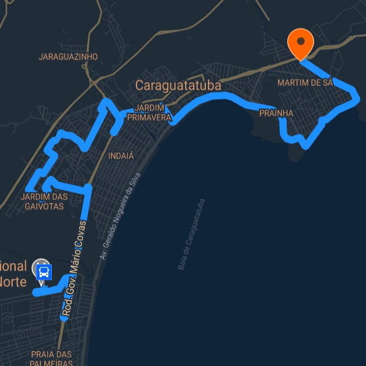
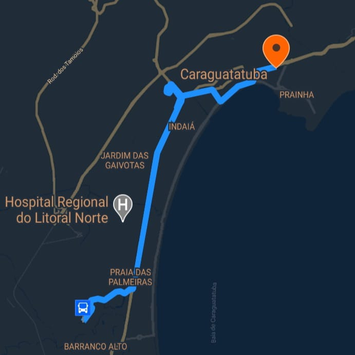
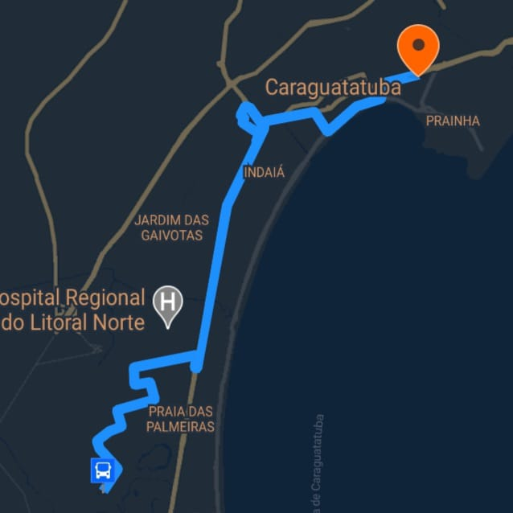
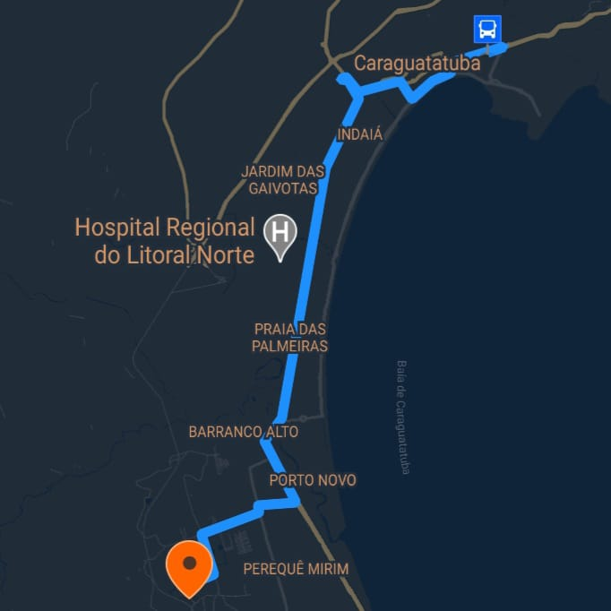
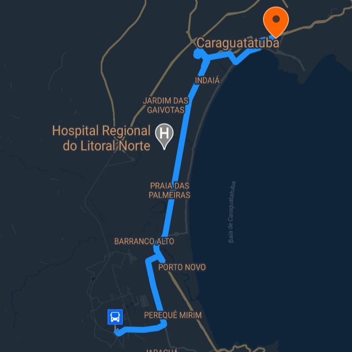

-
(100) Tinga - Olaria via Rodoviária
Dia da semana Horário de operação Frequência Domingo 00:50 - 23:40 30 min Segunda 00:35 - 23:55 20 min Terça 00:50 - 23:55 20 min Quarta 00:50 - 23:40 20 min Quinta 00:35 - 23:40 20 min Sexta 00:50 - 23:40 20 min Sábado 00:50 - 23:40 20 min 
Pontos do ônibus saída Tinga: Avenida Marechal Deodoro da Fonseca, CIDE Tinga, E. E. Dr. Eduardo Correia da Costa, Paróquia São João Batista, Avenida Floriano Peixoto, Padaria Estrela, Cemitério Indaía, AME, Terminal Rodoviário, Casa de Saúde Stela Maris, Avenida Prestes Maia, Avenida da Praia (Centro), Fórum, UBS Sumaré, Terminal Sumaré, Laticínios Litoral Norte, Centro Universitário Módulo, bairro Casa Branca, Rua Antônio Henrique de Mesquita, CIDE Norte, E. E. Benedita Pinto Ferreira, Bairro Olaria, Avenida Pedro Januário Leite, Rua Benedito Roque dos Santos.
Pontos do ônibus saída Olaria: Rua Benedito Roque dos Santos, CEI Olaria, Avenida Dr. Emiliano Campedeli, Rodovia Ubatuba - Caraguá, Avenida Siqueira Campos, CIASE Sumaré, UBS Sumaré, Fórum, Avenida da Praia (Centro), Avenida Prestes Maia, Casa de Saúde Stela Maris, AME, Terminal Rodoviário, Cemitério Indaiá, Padaria Estrela, Avenida Floriano Peixoto, Paróquia São João Batista, E. E. Dr. Eduardo Correia da Costa, CIDE Tinga, Avenida Marechal Deodoro da Fonseca. -
(101) Hospital Regional - Gaivotas / Martim de Sá via Rodoviária
Dia da semana Horário de operação Frequência Domingo 00:50 - 23:40 30 min Segunda 00:35 - 23:55 20 min Terça 00:50 - 23:55 20 min Quarta 00:50 - 23:40 20 min Quinta 00:35 - 23:40 20 min Sexta 00:50 - 23:40 20 min Sábado 00:50 - 23:40 20 min Pontos do ônibus saída Hospital Regional: Hospital Regional, Pontal Santa Marina, Centro de Controle de Zoonoses, Trevo do Poiares, Avenida Mal. Floriano Peixoto, Garagem Praiamar, CIDE Tinga, Avenida Marechal Deodoro da Fonseca, Avenida Brasília, Terminal Rodoviário, Cemitério Indaiá, Casa de Saúde Stela Maris, Avenida Prestes Maia, Avenida da Praia (Centro), Pró Mulher, Entreposto do Camaroeiro, Mirante Pôr do Som, Complexo do Camaroeiro, Prainha, Boulevard Prainha, Martim de Sá, Praça Antônio Fachinni, Avenida Fioravante Paschoalin.
Pontos do ônibus saída Martim de Sá: Avenida Fioravante Paschoalin, SP055 Rodovia Ubatuba-Caraguá, Avenida Presidente Castelo Branco, Fórum, Avenida da Praia (Centro), Avenida Prestes Maia, Avenida Miguel Varlez, Casa de Saúde Stela Maris, AME, Terminal Rodoviário, Cemitério Indaiá, Poupa Tempo, Avenida Rio Grande do Norte, Avenida Brasília, Avenida Marechal Deodoro da Fonseca, CIDE Tinga, Jardim Gaivotas, Avenida Cardeal, Avenida Garça, Garagem Praiamar, Avenida Mal. Floriano Peixoto, Trevo do Poiares, Centro Esportivo Municipal Ubaldo Gonçalves, Serramar Shopping, Hospital Regional. -
(102) Morro do Algodão via Pontal / Golfinho
Dia da semana Horário de operação Frequência Domingo 00:50 - 23:40 30 min Segunda 00:35 - 23:55 20 min Terça 00:50 - 23:55 20 min Quarta 00:50 - 23:40 20 min Quinta 00:35 - 23:40 20 min Sexta 00:50 - 23:40 20 min Sábado 00:50 - 23:40 20 min Pontos do ônibus saída Centro: Terminal Sumaré, Fórum, Rua Fernando Costa, Avenida da Praia (Centro), Avenida Prestes Maia, Casa de Saúde Stela Maris (Santa Casa), Cemitério Indaiá, Avenida José Herculano (Centro Esportivo Municipal, Serramar Shopping), Pontal Santa Marina, Ponte da Amizade, Colégio Adventista, Golfinho, Praça dos Aposentados, Praça do Cruzeiro, Rua Pedrina Borges Arouca.
Pontos do ônibus saída Bairro: Rua São Marcos, Supermercado Cruzero, Praça do Cruzeiro, Clube Ilha Morena, Avenida José Herculano (Rotatória do Morro do Algodão, Serramar Shopping, Centro Esportivo Municipal), Cemitério Indaiá, AME, Terminal Rodoviário, Casa de Saúde Stela Maris (Santa Casa), Avenida Prestes Maia, Avenida da Praia (Centro), Rua Caçapava, Fórum, Terminal Sumaré. -
(103) Morro do Algodão
Dia da semana Horário de operação Frequência Domingo 00:50 - 23:40 30 min Segunda 00:35 - 23:55 20 min Terça 00:50 - 23:55 20 min Quarta 00:50 - 23:40 20 min Quinta 00:35 - 23:40 20 min Sexta 00:50 - 23:40 20 min Sábado 00:50 - 23:40 20 min Pontos do ônibus saída Centro: Terminal Sumaré, Fórum, Rua Fernando Costa, Avenida da Praia (Centro), Avenida Prestes Maia, Casa de Saúde Stela Maris (Santa Casa), AME, Terminal Rodoviário, Cemitério Indaiá, Avenida José Herculano (Centro Esportivo Municipal, Serramar Shopping Rotatória Morro do Algodão), Clube Ilha Morena, Praça do Cruzeiro, Rua Pedrina Borges Arouca.
Pontos do ônibus saída Bairro: Rua São Marcos, Supermercado Cruzero, Praça do Cruzeiro, Praça dos Aposentados, Golfinho, Colégio Adventista, Pontal Santa Marina, Avenida José Herculano (Serramar Shopping, Centro Esportivo Municipal), Cemitério Indaiá, Casa de Saúde Stela Maris (Santa Casa), Avenida Prestes Maia, Avenida da Praia (Centro), Rua Caçapava, Fórum, Terminal Sumaré. -
(104) Pegorelli - Tarumãs via UPA Sul
Dia da semana Horário de operação Frequência Domingo 00:50 - 23:40 30 min Segunda 00:35 - 23:55 20 min Terça 00:50 - 23:55 20 min Quarta 00:50 - 23:40 20 min Quinta 00:35 - 23:40 20 min Sexta 00:50 - 23:40 20 min Sábado 00:50 - 23:40 20 min Pontos do ônibus saída Centro: Terminal Sumaré, Fórum, Rua Fernando Costa, Avenida da Praia (Centro), Avenida Prestes Maia, Casa de Saúde Stela Maris (Santa Casa), AME, Terminal Rodoviário, Cemitério Indaiá, Avenida José Herculano (Centro Esportivo Municipal, Serramar Shopping, UBS Porto Novo, SubPrefeitura), Jardim Tarumãs, E. E. Ângelo Barros de Araújo, CIDESul, UPA Sul, Residencial Nova Caraguá I, Pesqueiro Sone, Casas Populares, EMEF Masako Sone.
Pontos do ônibus saída Bairro: EMEF Masako Sone, Rua Yoshiso Shibata, Praça do Perequê-Mirim, CIASC Perequê-Mirim, CIDE Sul, E. E. Ângelo Barros de Araújo, Jardim Tarumãs, Avenida José Herculano (SubPrefeitura, UBS Porto Novo, Serramar Shopping, Centro Esportivo Municipal), Cemitério Indaiá, AME, Terminal Rodoviário, Casa de Saúde Stela Maris (Santa Casa), Avenida Prestes Maia, Avenida da Praia (Centro), Rua Caçapava, Fórum, Terminal Sumaré. -
(105) Pegorelli / Tarumãs via Perequê
Dia da semana Horário de operação Frequência Domingo 00:50 - 23:40 30 min Segunda 00:35 - 23:55 20 min Terça 00:50 - 23:55 20 min Quarta 00:50 - 23:40 20 min Quinta 00:35 - 23:40 20 min Sexta 00:50 - 23:40 20 min Sábado 00:50 - 23:40 20 min Pontos do ônibus saída Centro: Terminal Sumaré, Fórum, R. Fernando Costa, Av. da Praia (Centro), Av. Prestes Maia, Casa de Saúde Stela Maris (Santa Casa), AME, Terminal Rodoviário, Cemitério Indaiá, Av. José Herculano (Centro Esportivo Municipal, Serramar Shopping, UBS Porto Novo, SubPrefeitura), Jardim Tarumãs, E. E. Ângelo Barros de Araújo, CIDE Sul, CIASC Perequê-Mirim, Pça. do Perequê-Mirim, R. Yoshiso Shibata, EMEF Masako Sone.
Pontos do ônibus saída Bairro: EMEF Masako Sone, Casas Populares, Pesqueiro Sone, Residencial Nova Caraguá I, UPA Sul, CIDE Sul, E. E. Ângelo Barros de Araújo, Jardim Tarumãs, Av. José Herculano (SubPrefeitura, UBS Porto Novo, Serramar Shopping, Centro Esportivo Municipal), Cemitério Indaiá, AME, Terminal Rodoviário, Casa de Saúde Stela Maris (Santa Casa), Av. Prestes Maia, Av. da Praia (Centro), R. Caçapava, Fórum, Terminal Sumaré.